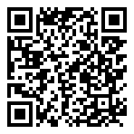

🔵 5ème · Période 3
Séquence 5 : Transmission de mouvement
📘 Fiche de structuration des connaissances
🔗 Lien direct vers cette page

55S
Scanne le QR code, ou saisis ce code sur la page d'accès direct du site.
https://lyceefrancaisdetananarive.github.io/technologie/go.html?c=55S
| Niveau | 5ème | Thème | Thème 2 : Fonctionnement et comportement des systèmes |
| Séquence | 5 : Transmission de mouvement | Compétences | Décrire un mouvement Identifier les mécanismes de transmission |
📌 Les types de mouvement
| Mouvement | Description | Exemples |
|---|---|---|
| Rotation | L'objet tourne autour d'un axe | Roue de vélo, hélice, moteur |
| Translation | L'objet se déplace en ligne droite | Tiroir, ascenseur, piston |
À retenir
Tout mouvement mécanique est soit une rotation (tourner), soit une translation (glisser), soit une combinaison des deux.
📌 Transmission de mouvement
Transmettre un mouvement = conserver le même type de mouvement (rotation → rotation).
| Mécanisme | Principe | Sens de rotation |
|---|---|---|
| Engrenages | Deux roues dentées en contact direct | Inversé (sens contraire) |
| Poulies-courroie | Deux poulies reliées par une courroie | Même sens (sauf courroie croisée) |
| Roue et vis sans fin | Vis hélicoïdale + roue dentée | Changement d'axe à 90° |
Rapport de transmission
r = Zmenante / ZmenéeSi r < 1 : la roue menée tourne plus vite (démultiplication)
Si r > 1 : la roue menée tourne moins vite mais plus fort (réduction)
📌 Transformation de mouvement
Transformer un mouvement = changer le type de mouvement (rotation ↔ translation).
| Mécanisme | Transformation | Exemple |
|---|---|---|
| Bielle-manivelle | Rotation ↔ Translation | Moteur de voiture, machine à coudre |
| Pignon-crémaillère | Rotation ↔ Translation | Direction de voiture, portail coulissant |
| Vis-écrou | Rotation → Translation | Étau, cric, vis de serrage |
| Came | Rotation → Translation | Soupape de moteur |
📚 Vocabulaire essentiel
Mots clés de la séquence
- Engrenage : deux roues dentées en contact qui transmettent un mouvement de rotation
- Poulie-courroie : deux poulies reliées par une courroie souple
- Rapport de transmission : r = Z menante / Z menée (compare les vitesses)
- Bielle-manivelle : mécanisme qui transforme une rotation en translation (et inversement)
- Pignon-crémaillère : engrenage + barre dentée pour rotation ↔ translation
- Roue menante : celle qui entraîne (liée au moteur) / Roue menée : celle qui est entraînée
📎 Référence : Programme de Technologie, BO n°9 du 29 février 2024 · Thème 2